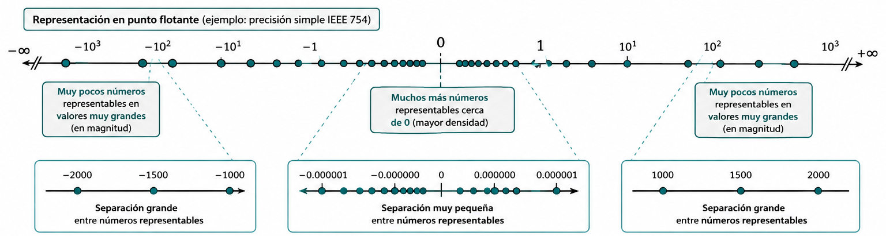
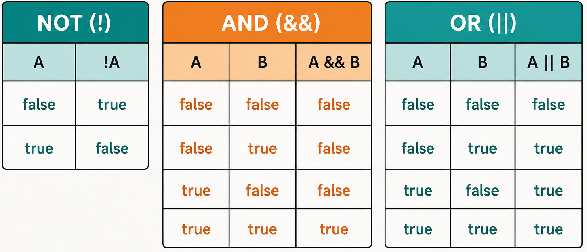
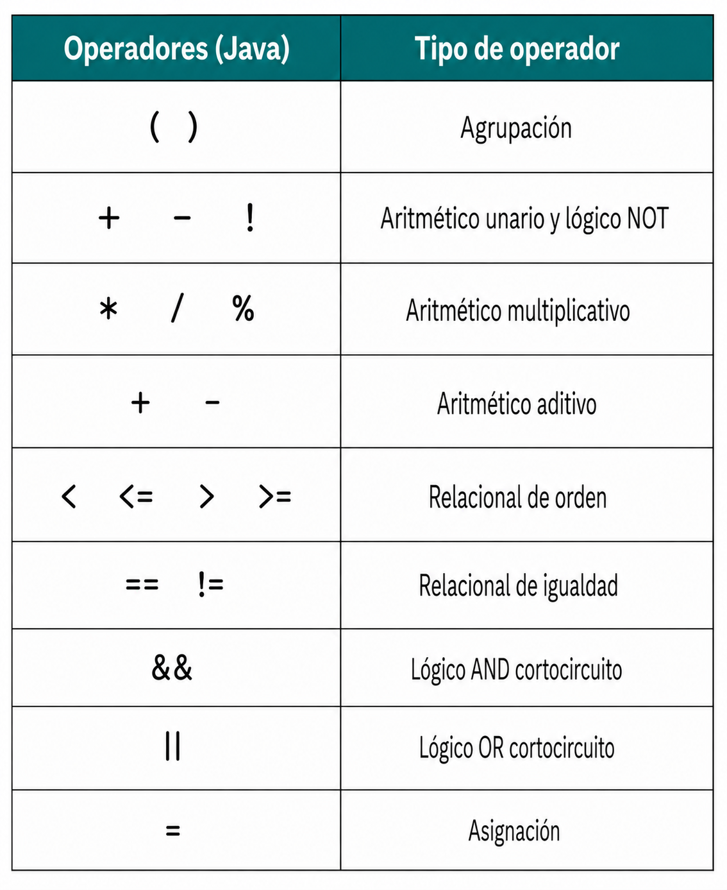

Hasta este punto de nuestro aprendizaje, hemos comprendido que un programa de ordenador es, en esencia, un algoritmo escrito para ser ejecutado por una máquina. En el tema anterior, exploramos los cimientos: aprendimos a declarar variables, a reconocer tipos de datos primitivos y a utilizar la biblioteca estándar de Java para realizar operaciones de entrada/salida básicas. Sin embargo, si analizamos los programas que hemos construido, observaremos que todos comparten una característica común: son puramente lineales. El ordenador se limita a ejecutar una instrucción tras otra, en el estricto orden físico en que fueron escritas.
No obstante, la programación en el «mundo real» y la resolución de problemas técnicos complejos en entornos productivos requieren una sofisticación mucho mayor. El pensamiento computacional no es una simple sucesión de pasos, sino un tejido o «urdimbre» donde cada hebra lógica debe entrelazarse con precisión. Para lograr esto, un lenguaje de programación debe ser entendido como un conjunto de reglas, símbolos y palabras que nos permiten modelar la realidad.
El proceso por el cual el ordenador interpreta nuestras intenciones comienza con el análisis léxico. Cuando el compilador recibe nuestro código fuente, su primera tarea es identificar elementos con significado propio. Como sucede en el lenguaje natural, no podemos formar una oración coherente amontonando palabras: en los lenguajes de programación combinamos estos componentes léxicos para formar expresiones. Algo como n + 1, por sí solo, es solo un valor latente; para que sea algo capaz de realizar una tarea, debe integrarse en una estructura que le dé sentido.
La verdadera potencia del software reside en la capacidad de romper la linealidadd el código para establecer un flujo de control. Este define el orden en que las sentencias se ejecutan realmente durante la actividad de la aplicación. Para ilustrarlo, podemos usar la analogía de los músicos: ir tocando las notas según indica el director equivale a una estructura secuencial; sin embargo, podremos tomar una decisión basada en una condición o, quizás, que una serie de acordes se repitan.
Profundizaremos aquí en cómo construir expresiones y conoceremos la selección y la iteración, herramientas que nos permitirán empezar a desarrollar algoritmos inteligentes, capaces de tomar decisiones autónomas y procesar información de forma eficiente, sentando así las bases necesarias antes de adentrarnos en los fundamentos de la programación orientada a objetos.
Como hemos señalado, la construcción de un programa comienza con la escritura de código fuente, una tarea que realizamos utilizando un editor y siguiendo las reglas gramaticales del lenguaje. Sin embargo, para que este texto cobre vida y se convierta en una serie de acciones ejecutables, debe pasar por un proceso de transformación riguroso. El primer paso de este viaje técnico es el análisis léxico, una fase en la que el compilador actúa como un lector meticuloso que descompone la secuencia ininterrumpida de caracteres que le entregamos en piezas individuales dotadas de significado.
En el lenguaje natural, cuando leemos una frase, nuestro cerebro identifica automáticamente dónde termina una palabra y comienza la siguiente, reconociendo sustantivos, verbos y adjetivos. En el ámbito de la programación, el ordenador realiza una operación análoga. No percibe el código como un conjunto de instrucciones complejas de un solo vistazo, sino como un flujo de símbolos pertenecientes al alfabeto; en el caso de Java, Unicode. La labor del analizador léxico consiste en agrupar estos símbolos en unidades atómicas, que son los componentes básicos que conforman la estructura del lenguaje.
Esta etapa es fundamental porque establece los cimientos sobre los que se construirá la lógica del programa, permitiendo ensamblar estos bloques en estructuras sintácticamente correctas. Si el analizador léxico encuentra un símbolo inesperado o una combinación de caracteres que no encaja en las categorías permitidas, el proceso se detendrá antes incluso de intentar comprender la intención del algoritmo. Por lo tanto, antes de profundizar en cómo tomar decisiones o repetir procesos, es esencial comprender la naturaleza de estos elementos mínimos y los mecanismos que permiten al compilador distinguirlos unos de otros.
Dentro del proceso de análisis léxico, el compilador debe ser capaz de reconocer los componentes básicos que integran el código fuente para poder interpretarlos adecuadamente. Estos componentes mínimos, que no pueden ser descompuestos en partes más pequeñas sin perder su sentido, reciben el nombre de tokens o elementos atómicos. En la gramática de un lenguaje de programación como Java, los tokens son el equivalente a las palabras en una oración del lenguaje natural; cada uno de ellos cumple una función específica, ya sea representar un valor constante, nombrar una variable o indicar una operación matemática.
Para que el analizador léxico pueda distinguir estos elementos dentro de la secuencia ininterrumpida de caracteres que escribimos, el lenguaje emplea unos símbolos especiales denominados separadores. Un separador es cualquier carácter o marca que indica de manera inequívoca dónde termina un token con significado propio y dónde comienza el siguiente. En este sentido, la programación vuelve a imitar a la lengua: así como usamos espacios para separar palabras en un texto escrito para que no se conviertan en una masa de letras incomprensible, Java utiliza los separadores para evitar que los tokens se fusionen.
Los elementos que actúan como separadores en Java son los siguientes:
Una vez que el analizador léxico ha hecho uso de estos separadores para aislar los tokens, estos se clasifican en diferentes categorías según su naturaleza, como los literales, los identificadores, los operadores y las palabras reservadas. Solo si el ensamblaje de estos bloques atómicos sigue las reglas de la sintaxis, el compilador podrá avanzar hacia la fase de traducción y ejecución del programa.
Un literal —o valor literal—, como ya vimos en el capítulo anterior, es la representación explícita y constante de un valor concreto directamente escrito en el código fuente de un programa. A través de los literales, el programador especifica valores fijos para los tipos de datos primitivos, el tipo de datos String y la referencia especial null.
Desde el punto de vista del análisis léxico, los literales son identificados por el compilador como tokens atómicos. Esto significa que constituyen unidades de información indivisibles con significado propio dentro de la gramática del lenguaje. A diferencia de lo que ocurre con un identificador o una variable, cuyo contenido o estado puede fluctuar dinámicamente durante el ciclo de vida de la ejecución, el valor representado por un literal queda prefijado de manera inmutable desde la fase de compilación.
Dentro de la especificación sintáctica de Java, los literales se clasifican rigurosamente según la categoría de datos a la que corresponden, obedeciendo a un conjunto estricto de convenciones léxicas para su escritura. Plantilla sintáctica de declaración de literal:
IntegerLiteral
FloatingPointLiteral
BooleanLiteral
CharacterLiteral
StringLiteral
NullLiteral
De forma predeterminada, cuando el analizador léxico procesa un literal numérico compuesto únicamente por dígitos (sin coma ni punto fraccionario), el compilador deduce que se trata de un valor de tipo int codificado en 32 bits. La representación convencional se realiza en decimal, mediante una secuencia de dígitos del 0 al 9. Un literal decimal no debe comenzar con el dígito 0 (salvo el propio número cero).
DecimalNumeral
0
NonZeroDigit [Digits]
(one of)
1 2 3 4 5 6 7 8 9
Digit
Digit Digits
0
NonZeroDigit
Esta sucesión de reglas merece una pequeña explicación. Un literal de tipo entero, IntegerLiteral, es bien el número cero o un dígito distinto de cero, NonZeroDigit, seguido, opcionalmente, de dígitos, Digits. Estos dígito, a su vez, pueden ser un dígito Digit o un dígito seguido de dígitos. Por último, un dígito es el número cero o un número distinto de cero. La especificación lo que nos dice es que un número entero puede tener un número indeterminado de dígitos pero que no puede comenzar por cero, salvo que sea el cero.
A partir de Java 7, se permite intercalar el carácter de subrayado (_) entre los dígitos de cualquier literal numérico para mejorar la legibilidad del código fuente (por ejemplo, 1_000_000). Estos caracteres son ignorados por el analizador léxico durante la fase de compilación y no afectan al valor asignado.
Digit
Digit [DigitsAndUnderscores] Digit
DigitOrUnderscore {DigitOrUnderscore}
Digit
_
Además del formato convencional, en decimal, Java permite representar literales enteros mediante otros tres sistemas de numeración:
DecimalNumeral
HexNumeral
OctalNumeral
BinaryNumeral
0 x HexDigits
0 X HexDigits
HexDigit
HexDigit [HexDigitsAndUnderscores] HexDigit
(one of)
0 1 2 3 4 5 6 7 8 9 a b c d e f
A B C D E F
HexDigitOrUnderscore {HexDigitOrUnderscore}
HexDigit
_
0 OctalDigits
0 OctalDigits
OctalDigit
OctalDigit [OctalDigitsAndUnderscores]
OctalDigit
(one of)
0 1 2 3 4 5 6 7
OctalDigitOrUnderscore {OctalDigitOrUnderscore}
OctalDigit
_
0 b BinaryDigits
0 B BinaryDigits
BinaryDigit
BinaryDigit [BinaryDigitsAndUnderscores]
BinaryDigit
(one of)
0 1
BinaryDigitOrUnderscore {BinaryDigitOrUnderscore}
BinaryDigit
_
Si se requiere que el literal sea interpretado por el compilador como un entero de precisión extendida de 64 bits (long), es obligatorio añadir el sufijo L o l al final de la secuencia de dígitos[3]Se recomienda enfáticamente el uso de la letra L mayúscula para evitar confusiones visuales con el número uno (1)..
DecimalNumeral [IntegerTypeSuffix]
HexNumeral
[IntegerTypeSuffix]
OctalNumeral [IntegerTypeSuffix]
BinaryNumeral [IntegerTypeSuffix]
(one of)
l L
Internamente, la máquina virtual Java (JVM) almacena todos los valores enteros utilizando la representación binaria en complemento a dos con signo[4]En la representación en complemento a dos, el bit más significativo, el primero, es 1 cuando el número es negativo. Los números negativos se calculan cambiando los unos por ceros y los ceros por unos, sumando uno al resultante.. Este formato fija los límites inferior y superior de los rangos numéricos que cada tipo de entero puede albergar en memoria (por ejemplo, entre − 231 y 231 − 1 para el tipo int).
int contador = 100; // Decimal int mascaraHex = 0xFF; // Hexadecimal (255) int patronBits = 0b1100; // Binario (12) long poblacion = 8000000000L; // Literal de 64b
Los literales de punto flotante se emplean para expresar números reales. Por defecto, la gramática de Java interpreta cualquier literal con punto decimal o notación exponencial como un valor de tipo double (64 bits), garantizando un grado elevado de precisión matemática.
Existen dos formas estándar de escribir literales de punto flotante:
DecimalFloatingPointLiteral [FloatTypeSuffix]
Digits . [Digits] [ExponentPart]
. Digits [ExponentPart]
Digits
ExponentPart
Digits [ExponentPart]
ExponentIndicator SignedInteger
(one of)
e E
[Sign] Digits
(one of)
+ -
(one of)
f F e E
A partir de las reglas anteriores podemos ver que un número en punto flotante puede empezar por punto cuando la parte entera sea cero. Cuando sea preciso declarar un literal de precisión simple de 32 bits (float) —para cumplir con los requerimientos de un método, por ejemplo—, se debe añadir el sufijo f o F al final del número.
double pi = 3.1415926535; // Tipo double por defecto double masa = 5.972e24; // Notación científica (double) float gravedad = 9.81f; // Sufijo f para forzar el tipo float
Supongamos que nuestra máquina, en la que cada ubicación de memoria tiene el mismo tamaño, permite representar los números mediante seis dígitos y un signo. Cuando definimos una variable o constante, la ubicación asignada consta de seis dígitos y un signo; si el valor es entero, la interpretación del número almacenado en esa ubicación es sencilla: puedo almacenar valores desde el -999999 hasta el +999999; el cero tiene dos representaciones. Nuestra precisión es seis dígitos y los números en ese rango pueden ser representados de forma exacta.
Supongamos que los dos dígitos de más a la izquierda nos permiten representar un exponente. La representación +561234, por ejemplo, es en realidad el número 1234 × 1056. De hecho, el rango de números que ahora podemos representar es mucho mayor: desde − 9999 × 1099 hasta + 9999 × 1099. Sin embargo, la precisión ahora es de solo cuatro dígitos; es decir, solo los números de cuatro dígitos pueden representarse con exactitud en nuestro sistema. ¿Qué sucede con los números con más dígitos? Los cuatro dígitos de la izquierda se representan correctamente, y los dígitos de la derecha, o dígitos menos significativos, se pierden (se asume que son 0). Por ejemplo, 1000000 puede representarse con exactitud, pero 4932416 no, porque nuestro esquema de codificación nos limita a cuatro dígitos significativos.
Para extender nuestro esquema de codificación y representar números de punto flotante, debemos poder representar exponentes negativos. Dado que nuestro esquema no incluye un signo para el exponente, vamos a modificarlo ligeramente: el signo existente se convierte en el signo del exponente y añadimos un signo a la izquierda para representar el signo del número.
Ahora podemos representar con precisión, con cuatro dígitos, todos los números entre − 9999 × 1099 y + 9999 × 1099. Añadir exponentes negativos a nuestro esquema nos permite representar fracciones tan pequeñas como 1 × 10−99. Nuestra precisión sigue siendo de cuatro dígitos. Los números 0.1032, 5.406 y 1000000 se pueden representar con exactitud. El número 476.0321, sin embargo, tiene siete cifras significativas, pero se representa como 476.0; ese 0.0321 no se puede representar en nuestro sistema[5]La JVM realiza redondeo en lugar de truncamiento al descartar los dígitos sobrantes. Si asumimos que tiene cuatro cifras significativas, el redondeo almacenaría 476.0321 como 476.0, pero almacenaría 476.0823 como 476.1..
La codificación interna sigue la norma IEEE 754 (formato binario de punto flotante para ordenadores), estructurando el valor en tres campos binarios diferenciados: bit de signo, mantisa y exponente. En el caso de los vaores de tipo float, el bit de signo es +1 o -1, la mantisa es un número entero positivo menor que 224 y el exponente en un número entre -126 y 127, incluidos. En el caso de los valores de tipo double, la mantisa en un número entero positivo menor que 253 y el exponente en un número entre -1022 y 1023, incluidos.
El nombre punto flotante hace referencia a que el punto decimal puede moverse. En nuestro modelo, cada número se almacena en cuatro dígitos; si el dígito que no es cero se almacena en la posición de más a la izquierda, el exponente se ajusta de la manera correspondiente: por ejemplo, 1000000 podríamos almacenarlo como +060001 pero lo almacenamos como +031000. Este formato proporciona la máxima precisión posible, denominándose formato normalizado. En el modelo que usa la JVM, además, solo puede haber un único dígito distinto de cero a la izquierda del punto decimal, lo que nos permite aumentar el número de dígitos de la mantisa en uno, por lo que la preción no es de 24 o 53 bits: pasa a ser 25 y 54. Esto es debido a que sabemos con certeza que el primer dígito siempre es 1 -al representarlo en base 2- y la máquina no lo almacena.
Es evidente que podemos representar valores extremadamente amplios o infinitesimales, asumiendo las limitaciones de redondeo y precisión propias de la aritmética de punto flotante. Sin embargo, con la explicación anterior, podríamos pensar que el cero no puede representarse. La realidad es que existen patrones para designar números específicos.
Y aunque pueda parecer otra cosa, hay que tener en cuenta que el número máximo de valores diferentes que la notación en punto flotante puede representar es 232 o 264 números: lo que hemos hecho es expandir esos números en un rango mayor. Además, los números que podemos representar no están espaciados de la misma manera entre ellos, como los números en punto fijo. Los posibles valores están más próximos cerca del origen y más separados cuanto más alejados.

Para la representación explícita de valores no numéricos o de estructuras complejas, el lenguaje provee la siguiente gama de literales:
(one of)
true false
' SingleCharacter '
'
EscapeSequence '
JavaLetterOrDigit but not ' or \
\ t (horizontal tab HT, Unicode
\u0009)
\ n (linefeed LF, Unicode
\u000a)
\ r (carriage return CR,
Unicode \u000d)
\ LineTerminator
(line continuation, no Unicode representation)
\ “ (double quote ", Unicode \u0022)
\ ’ (single quote ', Unicode \u0027)
\ \ (backslash \, Unicode \u005c)
the ASCII LF character, also known as "newline"
the ASCII CR
character, also known as "return"
the ASCII CR character followed
by the ASCII LF character
" {StringCharacter} "
JavaLetterOrDigit but not ' or \ EscapeSequence
null
boolean activo = true; char inicial = 'J'; char salto = '\n'; char unicodeA = '\u0041'; String saludo = "Bienvenido a Java"; Object objetoVacio = null;
Como ya comentamos en el capítulo anterior, son aquellos tokens que tienen asignada una función específica dentro del lenguaje: los programadores tienen prohibido utilizarlas para cualquier otro propósito; por ello, no es posible nombrar una variable, un campo o una clase utilizando uno de estos términos. Al igual que en el lenguaje natural existen palabras con funciones gramaticales fijas, como las preposiciones, las palabras reservadas constituyen el vocabulario fundamental que el compilador reconoce para estructurar la lógica del programa.
Gran parte del proceso de aprendizaje de un lenguaje de programación consiste en familiarizarse con el significado y la utilidad de estos términos. En el caso de Java, el conjunto de estas palabras ha ido evolucionando con las diferentes versiones del lenguaje para adaptarse a nuevas necesidades. En la actualidad, el núcleo está compuesto por cincuenta y una palabras, a las que se suman dieciséis términos adicionales cuyo significado especial solo se activa dependiendo del contexto específico en el que se utilicen.
Es importante destacar que Java es un lenguaje extremadamente estricto con la forma en que se escriben estos elementos, siendo sensible a la diferencia entre mayúsculas y minúsculas. Todas las palabras reservadas se componen exclusivamente de letras minúsculas. Por esta razón, un término como int es reconocido como una palabra reservada para definir tipos enteros, mientras que Int o INT serían tratados como identificadores diferentes definidos por el usuario, aunque su uso se desaconseja para evitar ambigüedades en la lectura del código.
Dentro de este grupo, existen casos particulares como las palabras goto o const. Aunque figuran en la lista oficial y el programador no puede emplearlas como nombres de variables, actualmente no tienen ninguna función operativa dentro del lenguaje Java. Su reserva responde principalmente a razones históricas y al deseo de los diseñadores del lenguaje de evitar que programadores provenientes de otros entornos, como C o C++, intenten aplicar estructuras de programación que son incompatibles con la seguridad y la filosofía de Java.
A continuación, se presenta la relación de palabras reservadas en Java, estructurada conforme a la Especificación del Lenguaje Java[6]La documentación y especificación oficial actualizada de Java puede consultarse en la plataforma Oracle Java Specification.:
Palabras reservadas (*Keywords*)| abstract | assert | boolean | break | byte |
| case | catch | char | class | const |
| continue | default | do | double | else |
| enum | extends | final | finally | float |
| for | goto | if | implements | import |
| instanceof | int | interface | long | native |
| new | package | private | protected | public |
| return | short | static | strictfp[7]La palabra strictfp fue introducida para restringir los cálculos de punto flotante a la norma IEEE 754; su uso es obsoleto. | super |
| switch | synchronized | this | throw | throws |
| transient | try | void | volatile | while |
| _ (caracter de subrayado) |
Asimismo, existen los siguientes términos que funcionan como palabras reservadas dependiendo del contexto en el que se utilicen:
Palabras reservadas dependientes del contexto (*Contextual Keywords*)| exports | module | non-sealed | open | opens |
| permits | provides | record | requires | sealed |
| to | transitive | uses | var | when |
| with | yield |
Finalmente, conviene recordar que el carácter de subrayado (_) por sí solo también se considera un elemento reservado para usos futuros[8]A partir de Java 9 (JEP 213), el carácter de subrayado _ dejó de ser un identificador válido y pasó a ser un término reservado., lo que prohíbe su empleo como un identificador de una sola letra en las declaraciones del programa.
Ahora que conocemos los literales y las palabras reservadas, vamos a modificar ligeramente una de las producciones sintácticas que veíamos en el tema anterior:
IdentifierChars but not a Keyword or BooleanLiteral or NullLiteral
Es decir, un identificador es una secuencia ilimitada de letras y dígitos, comenzando por una letra, que no es una palabra reservada, un literal booleano o un literal nulo.
Una vez que el compilador ha concluido la fase de análisis léxico e identificado los tokens que componen nuestro código, el siguiente nivel de abstracción consiste en ensamblar estas piezas atómicas para formar unidades de significado superior. En la gramática de Java, estas construcciones se denominan expresiones.
Una expresión, como ya vimos en el tema 2, no es otra cosa que un conjunto organizado de identificadores, literales y operadores que, al combinarse siguiendo las reglas sintácticas del lenguaje, pueden ser evaluados para obtener un valor concreto.
El concepto de evaluación es central en esta etapa: evaluar una expresión implica que el ordenador realiza las operaciones especificadas para producir un nuevo valor. Es importante destacar que toda expresión en Java tiene asociado un tipo de dato inamovible, el cual corresponde al tipo del resultado final obtenido tras su evaluación. Así, el resultado de una expresión que sume dos números enteros será un valor de tipo entero, mientras que el de una que compare dos valores será de tipo booleano.
Podemos entender las expresiones como los bloques de construcción lógicos de un programa. No obstante, existe una distinción técnica crucial entre una expresión y una instrucción o sentencia. Mientras que la expresión representa un valor potencial o un cálculo, la sentencia representa una acción completa que el ordenador debe llevar a cabo. Por ejemplo, la expresión matemática n + 1 por sí sola no constituye una orden operativa para la máquina; necesita ser integrada en una estructura que le dé un propósito funcional, como una sentencia de asignación que guarde dicho resultado en una variable. De esta forma, las expresiones actúan como la «materia prima» con la que alimentamos las instrucciones de nuestro código para dirigir el flujo de control y resolver problemas complejos.
Los operadores son los elementos funcionales que permiten llevar a cabo operaciones sobre un conjunto de datos u operandos, representados habitualmente por literales o identificadores. Los operadores permitidos en una operación dependen de los tipos de datos de los operandos y producen, tras su evaluación, un resultado que posee un tipo de dato determinado.
Son operadores que afectan a los números enteros y en punto flotante; devuelven un valor del mismo tipo que los operandos: si son enteros, por ejemplo, el resultado es entero. Los operadores unarios permiten mantener o cambiar el signo de una expresión numérica mediante el uso del más (+) y el menos (-). Junto a éstos, los operadores binarios tradicionales, que incluyen la suma (+), la resta (-), la multiplicación (*) y la división (/). Además, los lenguajes de programación suelen añadir la operación módulo o resto de la división (%).
En programación no es habitual usar el más unario y, cuando se trata de un literal, se asume que, si no hay signo, siempre es positivo.
Las operaciones de la suma, resta, producto y división, funcionan de la misma manera que te enseñaron cuando aprendiste a utilizarlas. La división en punto flotante, por ejemplo, genera un resultado en punto flotante:
7.2 / 2.0 produce 3.6
No obstante, es menos probable estar familiarizado con la división entera y el módulo, por lo que podemos estudiarlos un poco más en profundidad. Cuando dividimos dos enteros entre sí, obtemos de la división un cociente y un resto. Por ejemplo, la división de 6 entre 2 produce 3 como cociente y 0 como resto; pero la de 7 entre 3, produce también 3 como cociente pero 1 como resto. Y ese resto, 0 ó 1, es el resultado que obtenemos con la operación módulo:
6 / 2 produce 3 6 % 2 produce 0 7 / 2 produce 3 7 % 2 produce 1
Aunque existen lenguajes para los que el operador módulo solo es aplicable a la división entera, puede aplicarse en Java, y otros lenguajes modernos, con números en punto flotante. La forma de obtenerlo[9]El método estándar IEEE 754 puede obtenerse usando el método Math.IEEEremainder. en Java[10]Disponible en la especificación. consiste en obtener la división en punto flotante; multiplicar dicho valor sin decimales (sin redondeo) por el divisor; restar del dividendo el resultado de la multiplicación. Ejemplo:
Calculamos 7.8 % 3.0 en Java: Dividimos: 7.8 / 3.0 produce 2.6 Multiplicamos: 3.0 * 2.0 produce 6.0 Restamos: 7.8 - 6.0 produce 1.8
Literal
ArithmeticExpression
AssignmentExpression
AdditiveExpression
MultiplicativeExpression
AdditiveExpression + MultiplicativeExpression
AdditiveExpression -
MultiplicativeExpression
UnaryExpression
MultiplicativeExpression
* UnaryExpression
MultiplicativeExpression \
UnaryExpression
MultiplicativeExpression % UnaryExpression
+ Expression
- Expression
Los operadores relacionales son binarios, por lo que tienen dos operandos. Se utilizan para comparar datos de tipo primitivo ya sean numéricos, caracteres o booleanos, estableciendo relaciones de orden o igualdad entre ellos. El resultado de evaluar una expresión con estos operadores es siempre un valor de tipo booleano[11]Los booleanos corresponden a un tipo de datos lógico que solo pueden contener uno de dos valores: verdadero (true) y falso (false).: true o false.
Java proporciona operadores para verificar:
Literal
ArithmeticExpression
EqualityExpression
AssignmentExpression
RelationalExpression
EqualityExpression == RelationalExpression
EqualityExpression
!= RelationalExpression
AdditiveExpression
RelationalExpression < AdditiveExpression
RelationalExpression >
AdditiveExpression
RelationalExpression <= AdditiveExpression
RelationalExpression >=
AdditiveExpression
Cuidado con la asignación: Un error de lógica muy frecuente en etapas iniciales de aprendizaje consiste en confundir el operador de asignación (=) con el de igualdad (==), siendo el primero una instrucción de almacenamiento de un valor en memoria y el segundo una comparación.
Aunque en otros lenguajes resulte posible, en Java no existe relación de magnitud entre los valores booleanos, por lo que solo les son aplicables la igualdad y la desigualdad.
Los operadores lógicos son binarios, por lo que tienen dos operandos, salvo la negación. Permiten combinar valores booleanos o resultados de expresiones relacionales para construir afirmaciones lógicas. Los operadores fundamentales son:
Hay que entender desde el principio que true y false, como hemos visto al declarar BooleanLiteral, no son nombres de variable ni palabras reservadas: son dos constantes especiales pero, en la práctica, se comportan como dos palabras reservadas.

El operador NO-lógico precede a cualquier expresión lógica
(booleana) y nos proporciona el valor opuesto al de la expresión. Por
ejemplo, si miCaracter = 'B' es verdadero, !(miCaracter
= 'B')
es falso. Proporciona un método simple de cambiar el valor de un
aserto. Por ejemplo, si !(años > 50), es
equivalente escribir: años <= 50.
La operación Y-lógico requiere que ambos operandos sean verdaderos para que el resultado de la expresión sea verdadero; si uno cualquiera de ellos es falso, el valor de la expresión es falso.
La operación O-lógico proporciona un resultado verdadero si cualquiera de sus operandos, que pueden serlo los dos, es verdadero. Solo cuando ambos operandos son falsos el resultado de la operación es también falso.
Literal
ArithmeticExpression
EqualityExpression
ConditionalExpression
AssignmentExpression
ConditionalOrExpression
ConditionalAndExpression
ConditionalOrExpression || ConditionalAndExpression
Expression
ConditionalAndExpression && Expression
Java implementa para estos dos últimos una semántica de evaluación en cortocircuito, lo que significa que el ordenador detiene el proceso de evaluación tan pronto como el resultado final de la expresión booleana es inequívoco y que explicaremos en breve.
Aunque en muchos lenguajes la asignación se considera una sentencia o instrucción, en Java, el símbolo igual (=) es un operador, el operador de asignación, cuya misión es proporcionar valor a una variable, el de una expresión a su derecha, como ya vimos en el tema anterior.
Al procesar expresiones lógicas, la mayoría de los lenguajes de programación no garantizan el orden en que se evaluarán dichas expresiones: esto quiere decir que si una operación lógica incluye operaciones relacionales, por ejemplo, no sabemos el orden en que se evaluarán dichas operaciones. Además, en general, la operación lógica no se evaluará hasta que todos los operandos de la misma obtengan un valor booleano.
Java aplica una técnica de optimización denominada evaluación en cortocircuito o evaluación condicional. Bajo esta semántica, el ordenador no evalúa todos los componentes de una expresión lógica, sino que procesa los operandos de izquierda a derecha y detiene el procedimiento de evaluación tan pronto como el valor booleano final de la expresión completa es inequívoco.
Para comprender cómo el ordenador puede conocer el resultado sin examinar la expresión entera, debemos analizar el comportamiento de los operadores fundamentales:
Esta característica no es solo una cuestión de eficiencia técnica para ahorrar tiempo de ejecución; tiene implicaciones críticas en la robustez y seguridad del código. La evaluación en cortocircuito permite al programador escribir expresiones donde el primer operando actúa como una salvaguarda del segundo.
El orden en que el ordenador lleva a cabo las operaciones dentro de una sentencia no es un proceso arbitrario, sino que está estrictamente regulado por las leyes de la gramática. Al construir expresiones complejas donde conviven distintos tipos de componentes, es fundamental determinar con exactitud qué operación debe ejecutarse en primer lugar para que el resultado sea predecible y correcto. Para resolver este problema, el lenguaje emplea un conjunto de directrices denominadas reglas de precedencia y asociatividad.
La precedencia determina la jerarquía de los operadores en una expresión. De forma análoga a cómo en el álgebra convencional sabemos que una multiplicación debe realizarse antes que una suma, Java asigna un nivel de prioridad a cada operador. Los operadores con mayor precedencia se evalúan antes que aquellos situados en niveles inferiores.
En la cima de esta jerarquía se sitúan siempre los paréntesis (), que funcionan como una herramienta soberana para que el programador pueda forzar el orden de evaluación deseado, sobrescribiendo cualquier regla predefinida.

En el extremo opuesto, el operador de asignación posee la precedencia más baja de todo el lenguaje, lo que garantiza que cualquier cálculo situado a la derecha del símbolo igual sea completado totalmente antes de que el valor resultante se almacene en la variable.
Cuando una expresión contiene varios operadores que poseen el mismo nivel de precedencia, Java aplica las reglas de asociatividad para decidir el orden de ejecución. La asociatividad indica la dirección en la que el ordenador «agrupa» los operandos con sus respectivos operadores.
En la gran mayoría de los casos, los operadores binarios de Java presentan una asociatividad de izquierda a derecha. Esto significa que, ante una igualdad de rango, las operaciones se resuelven en el mismo orden físico en que aparecen escritas en el código. Por ejemplo, en una expresión que combine multiplicaciones y divisiones, el ordenador ejecutará primero la que se encuentre más a la izquierda.
Sin embargo, existen excepciones técnicas notables: los operadores unarios (como el cambio de signo o la negación lógica) y, muy especialmente, el operador de asignación, son asociativos por la derecha. Esta asociatividad a la derecha es lo que permite realizar asignaciones múltiples, donde el valor se propaga desde el literal situado al final de la línea hacia todas las variables situadas a su izquierda.
Es vital no confundir la precedencia de los operadores con el orden de evaluación de los operandos. Java establece un requisito adicional de seguridad y robustez: los operandos de un operador binario siempre se evalúan de izquierda a derecha. Esto implica que, incluso si el operador situado a la derecha tiene mayor precedencia, el ordenador primero obtendrá los valores de la parte izquierda de la expresión. Esta característica es crítica para evitar efectos laterales inesperados al realizar trazas de ejecución en algoritmos complejos.
Aunque las reglas de precedencia permiten escribir expresiones muy compactas, se recomienda el uso de paréntesis para clarificar la intención del código[12]Es evidente que esta afirmación carece de sentido si estás haciendo un examen en el que debes demostrar conocer cuál es el orden de precedencia y asociatividad de los operadores.. El empleo de paréntesis no solo ayuda a evitar errores de lógica difíciles de detectar, sino que facilita la lectura, asegurando que el flujo de control y el procesamiento de los datos sigan exactamente el diseño algorítmico previsto.
En el transcurso de este texto, hemos subrayado que Java es un lenguaje fuertemente tipado, lo que implica una vigilancia estricta sobre la naturaleza de los tipos de datos que manejamos. Sin embargo, en la práctica de la programación, es habitual encontrarnos con situaciones en las que necesitamos combinar operandos de distinta naturaleza dentro de una misma expresión o asignación. Por ejemplo, podríamos querer sumar un valor entero con uno real o asignar el resultado de un cálculo preciso a una variable con una capacidad de representación diferente.
Dado que el ordenador almacena internamente los números enteros y los de punto flotante de maneras totalmente distintas —utilizando patrones de bits que no guardan parecido entre sí—, el sistema no puede operar con ellos de forma directa sin realizar un ajuste previo.
Este proceso de transformación se denomina técnicamente conversión de tipos. La conversión es el mecanismo que garantiza la compatibilidad entre los elementos de una operación, permitiendo que el compilador traduzca nuestras intenciones lógicas a instrucciones que la máquina virtual pueda procesar sin ambigüedades. Dependiendo de cómo se inicie este proceso, las conversiones pueden ser implícitas, cuando el compilador las realiza de forma automática al detectar una mezcla de tipos en una expresión, o explícitas, cuando nosotros, como programadores, debemos intervenir deliberadamente mediante una operación específica conocida como casting.
Un aspecto crítico que debemos considerar al tratar con estas transformaciones es la seguridad de la información. No todas las conversiones son iguales desde el punto de vista del rigor de los datos; mientras que algunas son seguras porque el tipo de destino es capaz de representar perfectamente el valor original, otras pueden implicar una pérdida de precisión o el truncamiento de valores decimales. Por ello, el uso de conversiones explícitas no es solo un requisito gramatical en ciertos contextos, sino también una práctica de calidad que deja claro que la mezcla de tipos es intencionada y no fruto de un descuido. Dominar la mecánica de estas conversiones es esencial para asegurar que los datos se procesen con exactitud.
Las reglas de promoción constituyen la base de las conversiones implícitas o automáticas. Este fenómeno ocurre sin la intervención directa del programador cuando el compilador detecta que en una operación aritmética o lógica conviven operandos de distinta precisión o capacidad de representación. En estos escenarios, para poder ejecutar la instrucción, el sistema «promociona» el valor de menor rango al tipo de datos más amplio presente en la expresión, garantizando que no se produzca una pérdida de información durante el cálculo.
Técnicamente, estas transformaciones se denominan conversiones de ampliación (widening conversions), ya que el tipo de destino posee una capacidad igual o superior al de origen, lo que las convierte en operaciones intrínsecamente seguras. En el caso de Java se sigue una jerarquía estricta para realizar estos ajustes automáticos, basada en el rango numérico y en la distinción entre tipos enteros y reales:
Este mecanismo asegura que los resultados intermedios de una expresión se almacenen en variables temporales con el tipo de mayor capacidad que intervenga en la operación, permitiendo que el software maneje la complejidad de los datos de forma fluida. No obstante, aunque la promoción automática facilita el desarrollo al evitar farragosas conversiones manuales, el programador debe conocer estas reglas para prever el tipo de dato resultante y asegurar que el procesamiento de la información sea coherente con el diseño previsto.
A diferencia de las reglas de promoción, que actúan de forma automática, existen situaciones en las que el sistema no puede —o no debe— realizar el ajuste de tipos por su cuenta. Esto sucede principalmente cuando intentamos realizar una narrowing conversion, en la que queremos asignar un valor de un tipo con mayor capacidad de representación a una variable de un tipo menor o cuando la transformación implica un riesgo intrínseco de pérdida de información. En estos casos, Java requiere una orden directa del programador mediante una operación denominada conversión explícita o, más habitualmente, casting.
Para indicar al compilador nuestra intención de realizar un cast, debemos utilizar una sintaxis específica, colocando el tipo de destino entre paréntesis justo antes de la expresión que deseamos transformar.
int convertido = (int)3.1416;
A efectos prácticos, aunque no lo es, podéis considerarlo un operador cuya precedencia se situaría entre los operadores unarios y los aritméticos multiplicativos.
Al realizar un cast, el programador asume la responsabilidad total de la operación, informando al compilador de que es consciente del riesgo y de que la mezcla de tipos es intencionada. El uso de la conversión explícita conlleva consecuencias críticas en la integridad de los datos que debemos conocer para evitar errores lógicos:
Para completar nuestra comprensión sobre la transformación de datos, es imprescindible abordar el papel de las clases envolventes, conocidas como wrappers.
Java mantiene una distinción fundamental entre los tipos de datos primitivos y los referenciados. Sin embargo, existen numerosos escenarios en los que necesitamos tratar un valor simple como si fuera un objeto, ya sea para utilizar ciertas funcionalidades de la biblioteca estándar o para facilitar procesos de conversión complejos que los tipos básicos no pueden realizar por sí mismos.
Las clases envolventes son, en esencia, clases diseñadas para actuar como un complemento de los tipos primitivos, empaquetando un valor elemental dentro de una estructura de objeto. Java proporciona una de estas clases para cada uno de los tipos fundamentales: Byte, Short, Integer, Long, Float, Double, Character y Boolean. Observamos que, siguiendo las reglas de nomenclatura del lenguaje, sus nombres comienzan siempre con una letra mayúscula. El nombre de la clase envolvente coincide con el del tipo primitivo, excepción hecha de int y char, que se corresponden, respectivamente, con Integer y Character.
Java convierte automáticamente de un tipo primitivo a un objeto de la clase envolvente equivalente, boxing, y viceversa, unboxing. Debemos tener en cuenta que solo es posible la conversión entre tipos equivalentes, es decir, que no podemos, por ejemplo, convertir un int en Byte. Y aunque podamos hacer el cast entre tipos primitivos, ello tampoco es posible entre objetos de las clases envolventes.
Estas clases, además, nos proporcionan constantes y métodos asociados a los tipos primitivos que representan como: Integer.MIN_VALUE e Integer.MAX_VALUE, los valores enteros menor y mayor representables en Java.
En el ámbito de la conversión de tipos, su utilidad reside en la capacidad para transformar información textual en valores operativos para el ordenador. Dado que muchas operaciones de entrada de datos devuelven los resultados en forma de un objeto String, el programador debe recurrir a métodos específicos. Métodos como Integer.parseInt o Double.parseDouble permiten analizar el contenido de una cadena y obtener su valor numérico. Es vital validar estas operaciones , pues si el texto analizado no representa un número válido (por ejemplo, intentar convertir “Hola” a un entero), el sistema interrumpirá el flujo de control una excepción de tipo NumberFormatException.
Hasta ahora hemos utilizado algunas operaciones que forman parte directamente de las posibilidades del lenguaje Java. Podemos realizar operaciones aritméticas, comparar valores, construir expresiones lógicas y almacenar sus resultados en variables o realizar llamadas a métodos.
Sin embargo, un lenguaje de programación no tendría mucho sentido si obligara al programador a desarrollar desde cero todas las operaciones que puede necesitar. Pensemos, por ejemplo, en una aplicación que tenga que calcular una raíz cuadrada. Podríamos intentar desarrollar nosotros mismos un algoritmo para calcularla, del mismo modo que podríamos escribir nuestros propios algoritmos para obtener potencias, calcular valores absolutos o trabajar con funciones trigonométricas. Pero hacerlo cada vez que necesitáramos una de estas operaciones sería innecesario y, además, nos obligaría a resolver problemas que ya han sido resueltos muchas veces.
Una de las ventajas de utilizar un lenguaje de programación orientado a objetos, como Java, es que no es necesario partir de cero. Cualquier programa que desarrollemos, por sencillo que parezca, se apoya y se estructura sobre una inmensa base de código preexistente. Esta infraestructura es lo que se conoce como biblioteca estándar (en Java, de manera formal, la API de Java o Application Programming Interface).
Como vimos en el tema anterior, una biblioteca no es algo diferente al propio lenguaje que nos proporciona nuevas instrucciones mágicas: es una colección de clases y métodos predefinidos que realizan tareas específicas de uso común. Lo que hace es poner a nuestra disposición código escrito previamente y verificado, que podemos utilizar desde nuestros programas. De esta manera, podemos construir soluciones cada vez más complejas combinando las capacidades del lenguaje con las que proporcionan sus bibliotecas, lo que no solo acelera el desarrollo de software, sino que también garantiza la robustez, eficiencia y confiabilidad del código resultante.
La biblioteca estándar de Java es especialmente extensa. Como ya comentamos en el tema 1, para evitar que el programador se sienta abrumado por el volumen gigantesco de recursos que componen esta biblioteca, la plataforma organiza sus clases en agrupaciones lógicas denominadas paquetes (packages), que veremos a lo largo del curso.
Existe, sin embargo, un paquete elemental llamado java.lang; este agrupa las clases de uso más frecuente e indispensable para el núcleo de la programación (como, por ejemplo las clases String y System). En este momento nos interesa una de las clases más sencillas de utilizar y, al mismo tiempo, una de las que más frecuentemente encontraremos durante nuestros primeros programas: la clase Math.
La clase Math es una de las herramientas de utilidad más importantes de la biblioteca estándar de Java. Proporciona operaciones matemáticas que podemos utilizar directamente en nuestros programas. Entre ellas encontramos funciones para calcular valores absolutos, potencias, raíces cuadradas, valores máximo y mínimo, redondeos y otras muchas operaciones.
Su utilización nos permitirá resolver problemas matemáticos sin tener que desarrollar previamente el algoritmo correspondiente. Por ejemplo, si necesitamos obtener la raíz cuadrada de un número, no tenemos que escribir un algoritmo que la calcule. Podemos utilizar directamente el método proporcionado por la clase Math:
double numero = 25.0; double raiz = Math.sqrt(numero); System.out.println(raiz);
El resultado que obtendremos será:
5.0
La expresión Math.sqrt(numero) es una llamada a un método, como lo son print o println. La diferencia que encontramos ahora es que, en lugar de hacerlo desde un objeto, invocamos el método desde la misma clase Math y lo identificamos escribiendo primero el nombre de la clase, seguido de un punto y del nombre del método.
Podemos interpretar la expresión anterior de la siguiente forma:
Math . sqrt ( numero ) ↑ ↑ ↑ clase método argumento
El punto (.) permite acceder a un elemento proporcionado por una clase u objeto. En este caso, escribimos Math.sqrt porque queremos utilizar el método sqrt de la clase Math[15]Explicaremos la diferencia que existe entre invocar un método de un objeto o una clase en el tema 4..
Observemos que sqrt necesita un argumento: el número del que buscamos la raíz cuadrada. El método realiza la operación y devuelve un resultado, que podemos utilizar como cualquier otro valor obtenido mediante una expresión.
Por ejemplo:
double resultado = 2 * Math.sqrt(9);
En esta ocasión, primero se obtiene el valor proporcionado por Math.sqrt(9), que es 3.0, y posteriormente se realiza el producto:
Por tanto, la variable resultado terminará conteniendo el valor 6.0.
La clase Math proporciona numerosos métodos. No es necesario aprenderlos todos de memoria. Lo más importante es aprender a reconocer qué operación necesitamos y saber consultar la documentación de la biblioteca para encontrar el método apropiado, conocer sus parámetros y saber qué tipo de valor devuelve.
A continuación, vemos algunos de los elementos que pueden ser más interesantes para nosotros en este momento:
La utilización de una biblioteca no significa que podamos olvidar la naturaleza de la operación matemática que estamos realizando. La biblioteca nos proporciona los mecanismos para efectuarla, pero sigue siendo responsabilidad del programador comprender qué datos necesita cada método y cómo interpretar el resultado.
La vida real presenta en muchas ocasiones situaciones que se producen por azar. Cuando nosotros queremos modelar en nuestros programas estas situaciones, recurrimos a generadores de números aleatorios. En realidad, en nuestros programas, lo que usamos no son números aleatorios -aunque los denominemos así- sino pseudoaleatorios[16]Existen los denominados TRNG (True Random Number Generators) que extraen valores aleatorios de fenómenos físicos impredecibles.: se generan a través de fórmulas matemáticas que usan algoritmos deterministas y periódicos, que cumplen pruebas estadísticas de aleatorioedad.
El uso de los números aleatorios será algo que ocurra con frecuencia en nuestros ejercicios, por lo que utilizaremos un método que nos proporciona la clase Math: random.
Una llamada:
Math.random();
devuelve un número de tipo double mayor o igual que 0.0 y menor que 1.0.
Es importante observar que no podemos saber de antemano cuál será el valor concreto obtenido. Esto permite utilizar Math.random en programas que necesitan introducir cierta variabilidad en su comportamiento.
Podemos combinar este resultado con operaciones aritméticas para obtener valores en otros intervalos: multiplicando el resultado por el valor del límite y realizando una conversión explícita (casting) a tipo entero para truncar los decimales. Por ejemplo, la asignación:
int numero = (int) (Math.random() * 10);
da como resultado que la variable numero tome un valor entero entre 0 y 9. El uso de los paréntesis es importante: sin ellos, la conversión se aplicaría únicamente al valor devuelto directamente por Math.random(), antes de realizar la multiplicación, lo que demuestra la importancia de comprender la precedencia de los operadores y utilizar los paréntesis cuando queremos expresar de forma clara el orden en que deben realizarse las operaciones.
En general, para obtener un número en un rango [A, B] realizaremos un escalado:
int numeroAleatorio = (int) (Math.random() * (B - A + 1)) + A;
Explicamos con un poco más de detalle lo que hemos hecho. Sabemos que random generará un número entre 0.0 y 1.0, excluido. Queremos obtener tantos números como hay entre A y B; si, por ejmplo, el rango fuera entre 10 y 20, querríamos obtener once números: 10, 11, 12, 13, 14, 15, 16, 17, 18, 19 y 20; es decir, B - A + 1, porque queremos que B esté incluido. Por el ejemplo anterior, hemos visto que al multiplicar el resultado de random por un número, y convertirlo a entero, nos proporciona una cantidad de números igual al multiplicando: si seguimos con el ejemplo, al multiplicarlo por 11 nos proporciona los números del 0 al 10. Ahora solo tenemos que «desplazar» el cero hasta A, sumándolo al resultado de la operación anterior.
Como vemos, cada vez que invocamos un método de la biblioteca debemos escribir el nombe de la misma. En el desarrollo de programas que hagan mucho uso de sus métodos, repetir constantemente el prefijo Math puede hacer que escribir el código sea tedioso pero, aún peor, que sea incómodo de leer. Como ya vimos, import nos permite usar los objetos de una biblioteca pero, en el caso de Math, queremos importar sus métodos, cosa que hacemos añadiendo la palabra static.
Así, podemos traer de forma directa al ámbito de nuestro archivo fuente una función individual de la clase Math o importar todas sus constantes y métodos de manera colectiva utilizando el comodín (*):
Una vez declarada la importación al inicio de nuestro fichero, ya no es necesario calificar los métodos con el nombre de la clase: podemos escribir ecuaciones complejas con una sintaxis limpia y natural (como sqrt(pow(ladoA, 2) + pow(ladoB, 2))), que es más claro, mejorando la legibilidad.
La clase Math constituye un ejemplo sencillo de una idea mucho más general. Cuando programamos, no siempre debemos construir desde cero todas las operaciones que necesita nuestro problema.
El lenguaje Java, como la mayoría de los lenguajes modernos, proporciona una gran cantidad de funcionalidades ya implementadas que podemos incorporar. Algunas pertenecen directamente al lenguaje y otras se encuentran organizadas en clases de su biblioteca estándar: su uso forma parte de la actividad habitual de un programador.
Por este motivo, cuando aprendamos una nueva clase de la biblioteca estándar no intentaremos memorizar todos sus métodos. Aprenderemos qué problema resuelve, conoceremos algunas de las operaciones que proporciona pero, sobre todo, aprenderemos a consultar su documentación para utilizar correctamente los elementos que necesitemos.
Como vimos en el capítulo anterior, esto no es exactamente así cuando se trata de una cadena, por ejemplo. ↩
La capacidad de escribir literales en notación binaria directa mediante el prefijo 0b o 0B fue introducida formalmente en la versión Java SE 7 mediante la propuesta JEP 100. ↩
Se recomienda enfáticamente el uso de la letra L mayúscula para evitar confusiones visuales con el número uno (1). ↩
En la representación en complemento a dos, el bit más significativo, el primero, es 1 cuando el número es negativo. Los números negativos se calculan cambiando los unos por ceros y los ceros por unos, sumando uno al resultante. ↩
La JVM realiza redondeo en lugar de truncamiento al descartar los dígitos sobrantes. Si asumimos que tiene cuatro cifras significativas, el redondeo almacenaría 476.0321 como 476.0, pero almacenaría 476.0823 como 476.1. ↩
La documentación y especificación oficial actualizada de Java puede consultarse en la plataforma Oracle Java Specification. ↩
La palabra strictfp fue introducida para restringir
los cálculos de punto flotante a la norma IEEE 754; su uso es
obsoleto. ↩
A partir de Java 9 (JEP 213), el carácter de subrayado
_ dejó de ser un identificador válido y pasó a ser un
término reservado. ↩
El método estándar IEEE 754 puede obtenerse usando el método Math.IEEEremainder. ↩
Disponible en la especificación. ↩
Los booleanos corresponden a un tipo de datos lógico que solo pueden contener uno de dos valores: verdadero (true) y falso (false). ↩
Es evidente que esta afirmación carece de sentido si estás haciendo un examen en el que debes demostrar conocer cuál es el orden de precedencia y asociatividad de los operadores. ↩
Resulta interesante notar que un long (entero de 64 bits) se promociona automáticamente a float (real de 32 bits) si coinciden en una expresión. Aunque el float ocupa menos memoria, su notación científica le otorga una capacidad de representación de magnitudes exponencialmente mayor, considerándose por tanto un tipo más “amplio”, aunque se pueda perder precisión en los dígitos menos significativos. También se puede producir pérdida de precisión en las conversiones de int a float y de long a double. ↩
Internamente, al pasar a un tipo entero más pequeño, elimina los bits de la izquierda. En la representación binaria en complemento a dos, esto puede alterar el bit de signo: por ejemplo, la conversión de 1234 a byte produce el número -46. ↩
Explicaremos la diferencia que existe entre invocar un método de un objeto o una clase en el tema 4. ↩
Existen los denominados TRNG (True Random Number Generators) que extraen valores aleatorios de fenómenos físicos impredecibles. ↩